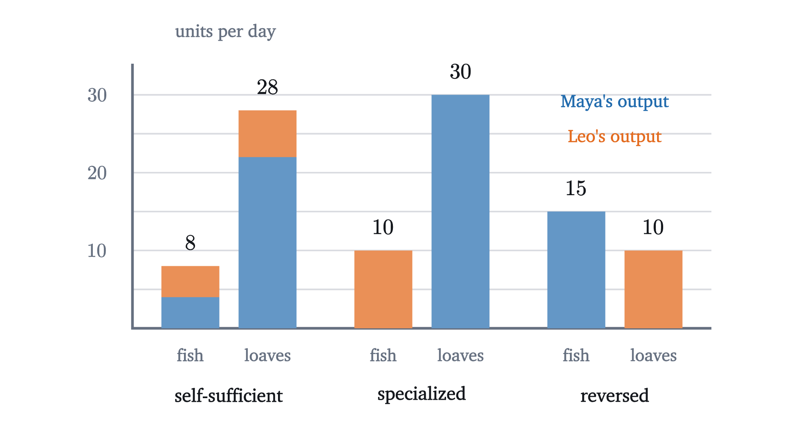
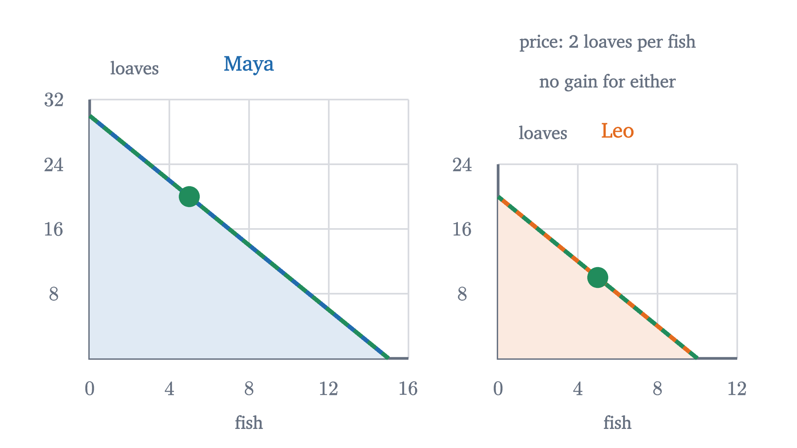

Comparative advantage: why trade helps both sides
Someone who is better at everything still gains by trading with someone who is worse at everything. Opportunity cost explains why, and a short proof shows when.
Maya and Leo are the only two people on a small island, and they live on bread and fish. Maya is quicker at both jobs: she bakes a loaf in 20 minutes and catches a fish in 40, while Leo needs an hour for either. Each works 600 minutes a day. Should Maya have anything to do with Leo?
It seems she should not. Whatever Leo could make for her she can make faster herself, and trading means handing over her own goods for his slow work. I am going to show that this reasoning is wrong, and that there are trades which leave both of them with more bread and more fish than either can produce alone, on the same 600 minutes. The argument was first published by David Ricardo in 1817, about England and Portugal, and it has stayed at the center of economics since. It is also widely misread, so we will be exact about what it does and does not claim.
What each can make in a day
Start with Maya alone. If she spends the whole day baking she gets $600/20 = 30$ loaves, and if she spends it fishing she gets $600/40 = 15$ fish. In between, $f$ fish and $b$ loaves use $40f + 20b$ minutes, and she can produce any combination with
When she wastes no time this is an equality, which we can solve for $b$: $b = 30 - 2f$. That is a straight line with slope $-2$ (see slope and lines). Leo’s day gives $60f + 60b = 600$, or $b = 10 - f$, a line with slope $-1$.
Living alone, each must choose a point in their own triangle. Suppose Maya chooses 4 fish and 22 loaves (that is $160 + 440 = 600$ minutes) and Leo chooses 4 fish and 6 loaves ($240 + 360 = 600$). These two choices are our baseline. Between them the island has 8 fish and 28 loaves.
Pause and try
Maya would like 10 fish and 12 loaves. Can she produce that in a day? What about 6 fish and 18 loaves, or 3 fish and 20 loaves?
Show answerHide answer
Ten fish and 12 loaves need $400 + 240 = 640$ minutes, more than she has, so that point lies outside her frontier. Six fish and 18 loaves need $240 + 360 = 600$ minutes: exactly on the frontier. Three fish and 20 loaves need $120 + 400 = 520$ minutes, so she can do it with 80 minutes idle, and the point is inside.
What a fish really costs
The picture shows that Maya can outproduce Leo in both goods. It also shows something the opening argument ignored, which is that the two lines have different slopes.
Think about what Maya gives up to catch one more fish. The fish takes 40 minutes, and in 40 minutes she could have baked 2 loaves. So one fish costs her 2 loaves. Leo’s fish takes 60 minutes, in which he could have baked 1 loaf, so a fish costs him 1 loaf. Measured in minutes Maya’s fish is cheaper. Measured in bread given up, which is the only thing either of them actually pays, Leo’s fish is cheaper.
| Minutes per fish | Minutes per loaf | A fish costs | A loaf costs | |
|---|---|---|---|---|
| Maya | 40 | 20 | 2 loaves | $\frac12$ fish |
| Leo | 60 | 60 | 1 loaf | 1 fish |
Maya has the absolute advantage in both goods: 40 minutes beats 60, and 20 beats 60. Comparative advantage is split. Leo has it in fish (1 loaf against 2), and Maya has it in bread ($\frac12$ fish against 1). The split is no accident of these numbers. The cost of a loaf in fish is the reciprocal of the cost of a fish in loaves, so if Leo’s fish cost is the lower one, $c_L < c_M$, then $\frac{1}{c_M} < \frac{1}{c_L}$ and Maya’s loaf cost is the lower one. Nobody can have a comparative advantage in both goods, and unless the two costs are equal, each person has it in exactly one.
Specializing makes more of both
Opportunity cost says who should make what. Let each make only the good in which they have the comparative advantage: Maya bakes all day and Leo fishes all day.
Pause and try
Work out the island’s total output of fish and of loaves under this plan and compare it with the baseline of 8 fish and 28 loaves. Then try the opposite plan, Maya fishing all day and Leo baking.
Show answerHide answer
Maya bakes 30 loaves and Leo catches 10 fish: 10 fish and 30 loaves, which is 2 more fish and 2 more loaves than the baseline, from the same 1200 minutes of work. The opposite plan gives 15 fish and 10 loaves. Compared with the baseline that is 7 more fish at the price of 18 loaves, more than 2.5 loaves per fish. That is wasteful: starting from the baseline, Maya alone could catch 7 more fish by giving up only 14 loaves, which leaves the island 15 fish and 14 loaves.

Here is where the extra comes from. Compared with the baseline, Leo catches 6 more fish and gives up 6 loaves. Maya catches 4 fewer fish and gains 8 loaves. Each fish that moves from Maya’s day to Leo’s costs the island 1 loaf and saves it 2.
Trade: turning the extra into something for each
More in total is not yet more for each. Under the plan Maya has 30 loaves and no fish, and Leo has 10 fish and no bread. They need to exchange, and that takes a price.
Say they agree on 1.4 loaves per fish, and Leo sells Maya 5 fish for 7 loaves.
Maya ends with 23 loaves and 5 fish, against 22 and 4 alone. Leo ends with 7 loaves and 5 fish, against 6 and 4. Nobody worked a minute longer.
Look at the deal from each side in minutes. Maya pays 1.4 loaves for a fish. Those loaves took her 28 minutes to bake, and catching the fish herself would have taken 40. Leo receives 1.4 loaves for a fish that took him 60 minutes, and baking 1.4 loaves himself would have taken 84. Each gets the good they bought for less of their own time than making it would have cost. That is what Maya’s opening argument missed: Leo is slower than she is at fishing, but buying from him is still cheaper for her than fishing, because what she pays with is bread, and she is very good at bread.
Pause and try
Leo, sensing his fish are valued, raises his price to 2.5 loaves per fish. Should Maya accept? What is the highest price she would pay, and the lowest Leo would take?
Show answerHide answer
Maya can make a fish herself by giving up 2 loaves, so she will not pay 2.5. At exactly 2 she is no better off buying than fishing, and below 2 she gains. Leo can make a loaf himself by giving up 1 fish, so he will not sell a fish for less than 1 loaf; above 1 he gains. A trade that helps both needs a price strictly between 1 and 2 loaves per fish, the two opportunity costs.
The theorem
The price is called the terms of trade, and the answer to the last exercise is the whole theorem. Here is the general statement. Take two producers A and B and two goods X and Y, with straight-line frontiers as above, and call a combination outside a producer’s frontier when it is not in that producer’s production possibility set. Write $c_A$ and $c_B$ for their opportunity costs of one X, in units of Y. If A makes only Y she produces some amount $Y_A$, and her frontier is $y = Y_A - c_A x$. If B makes only X he produces $X_B$, and his frontier is $y = c_B(X_B - x)$.
For Maya and Leo, $c_A = 2$, $c_B = 1$, $p = 1.4$ and $q = 5$: Maya is $0.6 \times 5 = 3$ loaves above her frontier, which at 5 fish allows 20 loaves, and Leo is $0.4 \times 5 = 2$ loaves above his.
“Outside the frontier” is a stronger conclusion than it may look. The theorem holds for every $q$ that B can supply, so by choosing how much to buy, A can reach every point of the line $y = Y_A - px$ with $0 < x \le X_B$, and that line lies above her frontier everywhere except at the corner $x = 0$. Whatever point she liked best on her own frontier, as long as it has some X and no more than $X_B$ of it, there is a point on the trade line with the same amount of X and more Y. (If she wants more X than B can make, she makes the rest herself and still gains; that is the last problem below.)
The theorem says a price between 1 and 2 works. It does not say which one they will settle on, and the price matters to them a great deal. Add the two gains from the proof: $(c_A - p)q + (p - c_B)q = (c_A - c_B)q$. The total is fixed by the quantity traded, and the price only divides it. Each gain is a surplus in the sense used for markets: what the good would have cost you to make, minus what you paid, or what you were paid minus your cost.
Where the price lands inside the interval depends on things outside this model: how much each wants of each good, and how hard each can bargain. With many buyers and sellers instead of two people, that job is done by supply and demand.
When there is nothing to gain
The hypothesis $c_B < c_A$ cannot be dropped. Suppose Leo needed 60 minutes per fish and 30 per loaf. He would still be slower than Maya at both, but his fish would cost 2 loaves, the same as hers. Part 2 of the theorem then leaves no room: Maya gains only if $p < 2$, Leo only if $p > 2$, and at $p = 2$ neither does.

So the source of the gain is that the two producers differ in what they give up. That one is better than the other plays no part. Two equally skilled people with different opportunity costs gain from trade, and a genius and a beginner with the same opportunity costs do not.
What the model leaves out
Everything above is a theorem about a model, and the model is small: two producers, two goods, one resource, constant opportunity costs. Ricardo’s insight carries over when “Maya” and “Leo” are countries, and economists have extended the theorem to many goods and many countries. But several things that matter in practice are absent, and the theorem says nothing about them.
- Adjustment is free in the model. Leo stops baking and fishes all day at no cost. A real worker whose industry shrinks may need new skills or a new town, and may be out of work for years. Studies of American regions that faced a surge of imports in the 2000s found job losses that lasted a decade or more. That is an empirical finding, and the model can neither predict it nor contradict it, because it has no unemployment in it.
- A country is not one person. Maya gains as a whole. If “Maya” is a nation, the same argument says the nation’s total consumption can rise, which means the winners gain more than the losers lose and could compensate them. It does not say that they do. Within a country, trade can make some groups worse off even while the total grows.
- Costs are constant in the model. The frontiers are straight, so full specialization pays. If the hundredth fish costs more bread than the first, frontiers bow outward and countries specialize only partly.
- Trade is costless. With shipping costs or tariffs, the usable range of prices narrows and may close.
A careful statement of the result is therefore: under these assumptions, voluntary trade based on comparative advantage raises the total and can raise everyone’s share. Whether a particular trade policy helps particular people is a further question that needs data.
Worked examples
Stepping back: the hard step was to stop measuring cost in minutes and measure it in the other good forgone. Once cost means opportunity cost, “who is better” stops being the question, and the proof is two subtractions. The same change of measure, asking what a choice costs in terms of the best alternative, runs through the whole subject.
Check yourself
In a day Kai can catch 6 fish or bake 12 loaves, and Ines can catch 4 fish or bake 4 loaves. Who has the comparative advantage in fish?
Problems
Work these on paper before opening the solutions. The first three repeat the lesson’s moves, the next three combine them, and the last two extend the model.
Problem 1
In a day Rosa can sew 12 shirts or 4 jackets, and Tom can sew 6 shirts or 3 jackets. Find each person’s opportunity cost of a jacket and of a shirt. Who has the absolute advantage in each good, and who has the comparative advantage?
Show solutionHide solution
A jacket costs Rosa $12/4 = 3$ shirts and Tom $6/3 = 2$ shirts. A shirt costs Rosa $\frac13$ jacket and Tom $\frac12$ jacket. Rosa makes more of either good in a day, so she has the absolute advantage in both. Tom has the comparative advantage in jackets ($2 < 3$) and Rosa in shirts ($\frac13 < \frac12$).
Problem 2
Rosa and Tom from the previous problem specialize by comparative advantage. Give the range of prices, in shirts per jacket, at which both gain. If Tom sells 2 jackets at 2.5 shirts each, what does each consume, and how far outside their own frontier is each?
Show solutionHide solution
Both gain when the price is strictly between 2 and 3 shirts per jacket. Rosa makes 12 shirts and Tom 3 jackets. Tom sells 2 jackets for 5 shirts. Rosa has 7 shirts and 2 jackets. Alone, with 2 jackets she could have at most $12 - 3 \times 2 = 6$ shirts, so she is 1 shirt outside. Tom has 5 shirts and 1 jacket. Alone, with 1 jacket he could have $6 - 2 \times 1 = 4$ shirts, so he is 1 shirt outside. The total gain is $(3 - 2) \times 2 = 2$ shirts, and a price halfway between the costs splits it evenly.
Problem 3
Maya and Leo trade 5 fish at 1.8 loaves per fish instead of 1.4. Find what each consumes and each one’s gain over their own frontier. Who would rather have this price?
Show solutionHide solution
Leo sells 5 fish for 9 loaves. Maya has 5 fish and $30 - 9 = 21$ loaves, and her frontier at 5 fish allows 20, so she gains 1 loaf. Leo has 5 fish and 9 loaves, and his frontier at 5 fish allows 5, so he gains 4. The total is still 5. Leo, the seller of fish, prefers the higher price: at 1.4 the split was 3 for Maya and 2 for Leo.
Problem 4
Farm A needs 2 hours of work per sack of wheat and 4 hours per sack of corn. Farm B needs 6 hours per sack of wheat and 9 hours per sack of corn. (a) Find the range of prices, in sacks of wheat per sack of corn, at which trade helps both. (b) Someone proposes 1 sack of corn for 2.5 sacks of wheat. Which farm refuses, and why?
Show solutionHide solution
(a) The data are hours per unit. Corn costs A $4/2 = 2$ sacks of wheat and costs B $9/6 = 1.5$. B has the comparative advantage in corn although it is slower at both crops, and A has it in wheat. Both gain at prices strictly between 1.5 and 2 sacks of wheat per sack of corn. (b) A refuses. A would be the buyer of corn, and paying 2.5 sacks of wheat (5 hours of its work) for a sack of corn it can grow in 4 hours makes it worse off.
Problem 5
Maya builds a better oven and now bakes a loaf in 10 minutes. Nothing else changes. (a) What are the new opportunity costs and the new range of mutually beneficial prices? (b) Leo has not improved at anything. Can he be better off than before? Illustrate with a price of 2.5 loaves per fish and 5 fish traded.
Show solutionHide solution
(a) Maya can now make 60 loaves or 15 fish, so a fish costs her $40/10 = 4$ loaves. Leo’s cost is still 1. The range widens from $(1, 2)$ to $(1, 4)$ loaves per fish. (b) Yes. At 2.5, Leo sells 5 fish for 12.5 loaves and has 5 fish and 12.5 loaves, against 5 fish and 7 loaves at the old price of 1.4. Maya has 5 fish and $60 - 12.5 = 47.5$ loaves, and her own frontier at 5 fish allows $60 - 20 = 40$, so she also gains. Prices above 2 were impossible before, because Maya would have refused them. Her improvement at bread made fish scarcer in her terms and raised what she will pay for Leo’s fish. The model does not guarantee that the price rises, only that it now can.
Problem 6
A critic says: “Leo needs 60 minutes per fish and Maya 40. A plan that has the slower fisher catch all the fish must waste time.” Starting from the specialized plan (Maya 30 loaves, Leo 10 fish), move one fish from Leo’s day to Maya’s and compute what happens to total output. Then say exactly what is wrong with the critic’s argument.
Show solutionHide solution
If Maya catches one fish she spends 40 minutes and bakes 2 fewer loaves. Leo catches one fish fewer, which frees 60 minutes, and he bakes 1 loaf. Total fish are unchanged at 10 and total loaves fall from 30 to 29. Each fish moved to the “faster” fisher costs the island a loaf. The critic compares Maya’s minutes with Leo’s minutes as if a minute saved by one could be spent by the other. It cannot: Maya’s 40 minutes come out of Maya’s baking, where a minute yields three times what Leo’s minute yields. The right measure of cost is the bread given up, and by that measure Leo is the cheaper fisher.
Problem 7
Let A and B have equal opportunity costs, $c_A = c_B = c$. Use the gains formulas from the proof of the theorem to show that no price lets both gain. Then explain in a sentence why two producers with the same opportunity cost have nothing to offer each other, even if one is far more productive.
Show solutionHide solution
With A buying X, the gains are $(c - p)q$ for A and $(p - c)q$ for B. These add to zero, so if one is positive the other is negative, and both are zero only at $p = c$. If the roles are reversed, with A selling X, the same formulas hold with the signs exchanged, and again they add to zero. So no trade makes both better off. The reason: trade lets you turn one good into the other at the price $p$ instead of at your own cost, and when both producers convert at the same rate $c$, the only price both accept is $c$, the rate each already had at home.
Problem 8
Suppose Leo works only 120 minutes a day, so he can make at most 2 fish or 2 loaves, and Maya wants 4 fish. Leo catches 2 fish and sells both to Maya at $p$ loaves each, with $1 < p < 2$. Maya is not fully specialized: she catches the other 2 fish herself. Find each one’s consumption and show that both are outside their own frontiers. What does this tell you about the theorem’s assumption that A makes only Y?
Show solutionHide solution
Maya spends 80 minutes on 2 fish and 520 minutes on 26 loaves, then pays $2p$ loaves for Leo’s 2 fish. She has 4 fish and $26 - 2p$ loaves. Her frontier at 4 fish allows 22 loaves, and $26 - 2p > 22$ exactly when $p < 2$. Leo has no fish and $2p$ loaves. His frontier at no fish allows 2 loaves, and $2p > 2$ exactly when $p > 1$. With $p = 1.4$ Maya gains 1.2 loaves and Leo gains 0.8, a total of $2 = (2 - 1) \times 2$. So full specialization by both is not needed. What matters is that each unit traded is made by the producer with the lower opportunity cost. A small trading partner specializes completely, while the large one keeps making some of both goods.